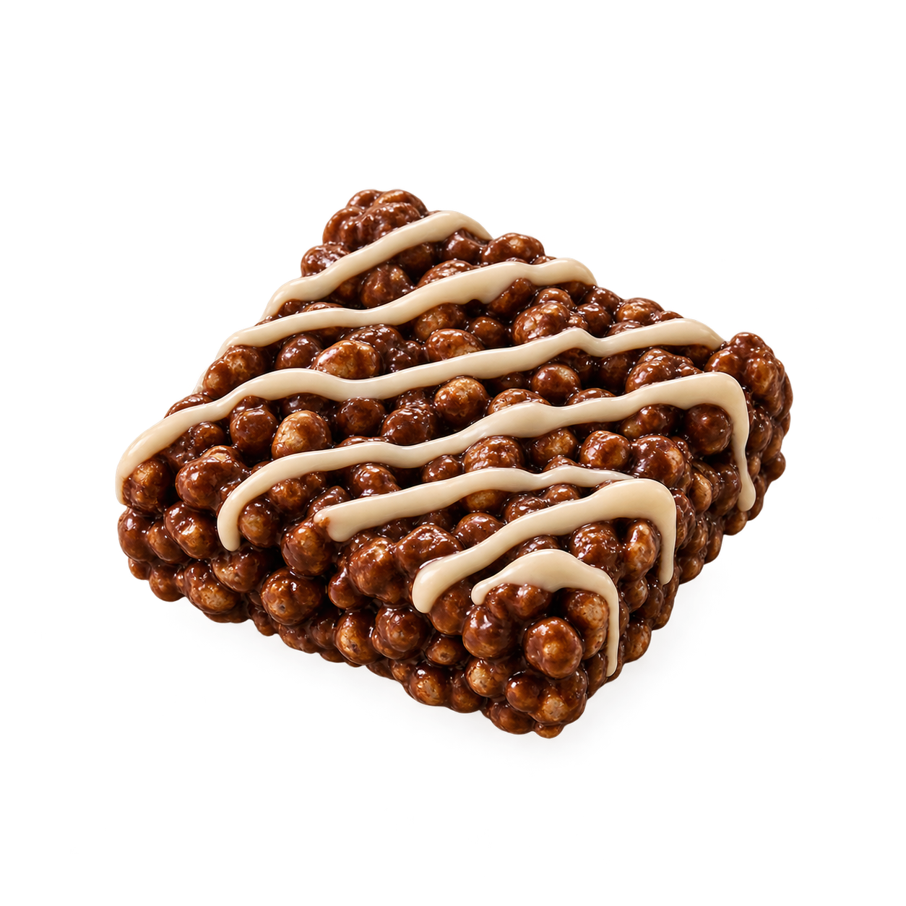

Carob powder
What it is
Carob-derived powder.
Why it’s included
[VERIFIED FLAVOUR, COLOUR AND FORMULATION ROLE]
The formulation, made approachable
Sleep Treat brings together texture, flavour, functionality and ingredient choice in one carefully developed formulation. Explore what is included, then open the science notes to see what has been verified—and what is still being finalised.
Five formulation highlights

The little things inside
Final explanations should be supported by the formulation record, supplier documentation, measurement or cited literature.
Carob-derived powder.
[VERIFIED FLAVOUR, COLOUR AND FORMULATION ROLE]
Soy-based crisp inclusion.
[VERIFIED TEXTURE AND STRUCTURAL ROLE; ALLERGEN WORDING REQUIRED]
Magnesium-containing ingredient.
[VERIFIED SELECTION RATIONALE AND FINAL ELEMENTAL MAGNESIUM VALUE]
Oat-derived flour.
[VERIFIED BINDING, STRUCTURAL OR SENSORY ROLE; EXACT SPECIFICATION REQUIRED]
Rice-derived flour.
[VERIFIED FORMULATION ROLE]
Chicory-derived ingredient.
[EXACT FORM AND VERIFIED FUNCTIONAL ROLE]
Seed-based butter.
[VERIFIED BINDING, FAT, FLAVOUR OR TEXTURAL ROLE; ALLERGEN REVIEW REQUIRED]
Evidence before promises
This section separates product storytelling from scientific evidence. Each technical statement should identify its basis and verification status.
How the ingredients were balanced to achieve the intended product structure, flavour and eating experience.
[FINAL FORMULATION RATIONALE]
Describe the target texture, each structural ingredient and the method used to evaluate the result.
[METHOD, RESULTS AND SAMPLE INFORMATION]
Summarise the intended sensory profile without overstating evaluation findings.
[PANEL TYPE, SAMPLE SIZE, SCALE, METHOD AND RESULTS]
Report ingredient source separately from elemental magnesium per serving, with the basis stated clearly.
[SOURCE, mg ELEMENTAL MAGNESIUM, BASIS AND DATE]
Present only tests actually completed, including method, specification, result and date.
[CONFIRMED QUALITY TEST RECORD]
Design goal → formulation challenge → change made → observed outcome.
[TEAM-SUPPLIED DEVELOPMENT NOTES]
Curious minds